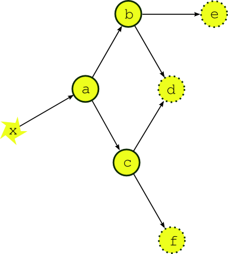
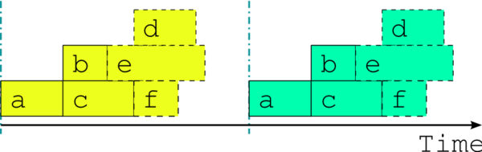
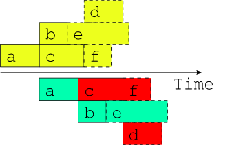

Figure 3: If the external driving data is available in advance, can we start running the next cycle early?
Environmental forecasting suites generate forecast products from a potentially large group of interdependent scientific models and associated data processing tasks. They are constrained by availability of external driving data: typically one or more tasks will wait on real time observations and/or model data from an external system, and these will drive other downstream tasks, and so on. The dependency diagram for a single forecast cycle in such a system is a Directed Acyclic Graph as shown in Figure 1 (in our terminology, a forecast cycle is comprised of all tasks with a common cycle time, which is the nominal analysis time or start time of the forecast models in the group). In real time operation processing will consist of a series of distinct forecast cycles that are each initiated, after a gap, by arrival of the new cycle’s external driving data.
From a job scheduling perspective task execution order in such a system must be carefully controlled in order to avoid dependency violations. Ideally, each task should be queued for execution at the instant its last prerequisite is satisfied; this is the best that can be done even if queued tasks are not able to execute immediately because of resource contention.
Cylc was developed for the EcoConnect Forecasting System at NIWA (National Institute of Water and Atmospheric Research, New Zealand). EcoConnect takes real time atmospheric and stream flow observations, and operational global weather forecasts from the Met Office (UK), and uses these to drive global sea state and regional data assimilating weather models, which in turn drive regional sea state, storm surge, and catchment river models, plus tide prediction, and a large number of associated data collection, quality control, preprocessing, post-processing, product generation, and archiving tasks.1 The global sea state forecast runs once daily. The regional weather forecast runs four times daily but it supplies surface winds and pressure to several downstream models that run only twice daily, and precipitation accumulations to catchment river models that run on an hourly cycle assimilating real time stream flow observations and using the most recently available regional weather forecast. EcoConnect runs on heterogeneous distributed hardware, including a massively parallel supercomputer and several Linux servers.
Most dependence between tasks applies within a single forecast cycle. Figure 1 shows the dependency diagram for a single forecast cycle of a simple example suite of three forecast models (a, b, and c) and three post processing or product generation tasks (d, e and f). A scheduler capable of handling this must manage, within a single forecast cycle, multiple parallel streams of execution that branch when one task generates output for several downstream tasks, and merge when one task takes input from several upstream tasks.


Figure 2 shows the optimal job schedule for two consecutive cycles of the example suite in real time operation, given execution times represented by the horizontal extent of the task bars. There is a time gap between cycles as the suite waits on new external driving data. Each task in the example suite happens to trigger off upstream tasks finishing, rather than off any intermediate output or event; this is merely a simplification that makes for clearer diagrams.

Now the question arises, what happens if the external driving data for upcoming cycles is available in advance, as it would be after a significant delay in operations, or when running a historical case study? While the forecast model a appears to depend only on the external data x at this stage of the discussion, in fact it would typically also depend on its own previous instance for the model background state used in initializing the new forecast. Thus, as alluded to in Figure 3, task a could in principle start as soon as its predecessor has finished. Figure 4 shows, however, that starting a whole new cycle at this point is dangerous - it results in dependency violations in half of the tasks in the example suite. In fact the situation could be even worse than this - imagine that task b in the first cycle is delayed for some reason after the second cycle has been launched. Clearly we must consider handling inter-cycle dependence explicitly or else agree not to start the next cycle early, as is illustrated in Figure 5.
Forecast models typically depend on their own most recent previous forecast for background state or restart files of some kind (this is called warm cycling) but there can also be inter-cycle dependence between different tasks. In an atmospheric forecast analysis suite, for instance, the weather model may generate background states for observation processing and data-assimilation tasks in the next cycle as well as for then next forecast model run. In real time operation inter-cycle dependence can be ignored because it is automatically satisfied when one cycle finishes before the next begins. If it is not ignored it drastically complicates the dependency graph by blurring the clean boundary between cycles. Figure 6 illustrates the problem for our simple example suite assuming minimal inter-cycle dependence: the warm cycled models (a, b, and c) each depend on their own previous instances.
For this reason, and because we tend to see forecasting suites in terms of by their real time characteristics, other metaschedulers have ignored inter-cycle dependence and are thus restricted to running entire cycles in sequence at all times. This does not affect normal real time operation but it can be a serious impediment when advance availability of external driving data makes it possible, in principle, to run some tasks from upcoming cycles before the current cycle is finished - as was suggested at the end of the previous section. This can occur, for instance, after operational delays (late arrival of external data, system maintenance, etc.) and to an even greater extent in historical case studies and parallel test suites started behind a real time operation. It can be a serious problem for suites that have little downtime between forecast cycles and therefore take many cycles to catch up after a delay. Without taking account of inter-cycle dependence, the best that can be done, in general, is to reduce the gap between cycles to zero as shown in Figure 5. A limited crude overlap of the single cycle job schedule may be possible for specific task sets but the allowable overlap may change if new tasks are added, and it is still dangerous: it amounts to running different parts of a dependent system as if they were not dependent and as such it cannot be guaranteed that some unforeseen delay in one cycle, after the next cycle has begun, (e.g. due to resource contention or task failures) won’t result in dependency violations.


Figure 7 shows, in contrast to Figure 4, the optimal two cycle job schedule obtained by respecting all inter-cycle dependence. This assumes no delays due to resource contention or otherwise - i.e. every task runs as soon as it is ready to run. The scheduler running this suite must be able to adapt dynamically to external conditions that impact on multi-cycle scheduling in the presence of inter-cycle dependence or else, again, risk bringing the system down with dependency violations.


To further illustrate the potential benefits of proper inter-cycle dependency handling, Figure 8 shows an operational delay of almost one whole cycle in a suite with little downtime between cycles. Above the time axis is the optimal schedule that is possible in principle when inter-cycle dependence is taken into account, and below it is the only safe schedule possible in general when it is ignored. In the former case, even the cycle immediately after the delay is hardly affected, and subsequent cycles are all on time, whilst in the latter case it takes five full cycles to catch up to normal real time operation.
Similarly, Figure 9 shows example suite job schedules for an historical case study, or when catching up after a very long delay; i.e. when the external driving data are available many cycles in advance. Task a, which as the most upstream forecast model is likely to be a resource intensive atmosphere or ocean model, has no upstream dependence on co-temporal tasks and can therefore run continuously, regardless of how much downstream processing is yet to be completed in its own, or any previous, forecast cycle (actually, task a does depend on co-temporal task x which waits on the external driving data, but that returns immediately when the data is available in advance, so the result stands). The other forecast models can also cycle continuously or with a short gap between, and some post processing tasks, which have no previous-instance dependence, can run continuously or even overlap (e.g. e in this case). Thus, even for this very simple example suite, tasks from three or four different cycles can in principle run simultaneously at any given time. In fact, if our tasks are able to trigger off internal outputs of upstream tasks, rather than waiting on full completion, successive instances of the forecast models could overlap as well (because model restart outputs are generally completed early in the forecast) for an even more efficient job schedule.

Cylc manages a pool of proxy objects that represent the real tasks in a suite. Task proxies know how to run the real tasks that they represent, and they receive progress messages from the tasks as they run (usually reports of completed outputs). There is no global cycling mechanism to advance the suite; instead individual task proxies have their own private cycle time and spawn their own successors when the time is right. Task proxies are self-contained - they know their own prerequisites and outputs but are not aware of the wider suite. Inter-cycle dependence is not treated as special, and the task pool can be populated with tasks with many different cycle times. The task pool is illustrated in Figure 10. Whenever any task changes state due to completion of an output, every task checks to see if its own prerequisites have been satisfied. In effect, cylc gets a pool of tasks to self-organize by negotiating their own dependencies so that optimal scheduling, as described in the previous section, emerges naturally at run time.
1Future plans for EcoConnect include additional deterministic regional weather forecasts and a statistical ensemble.